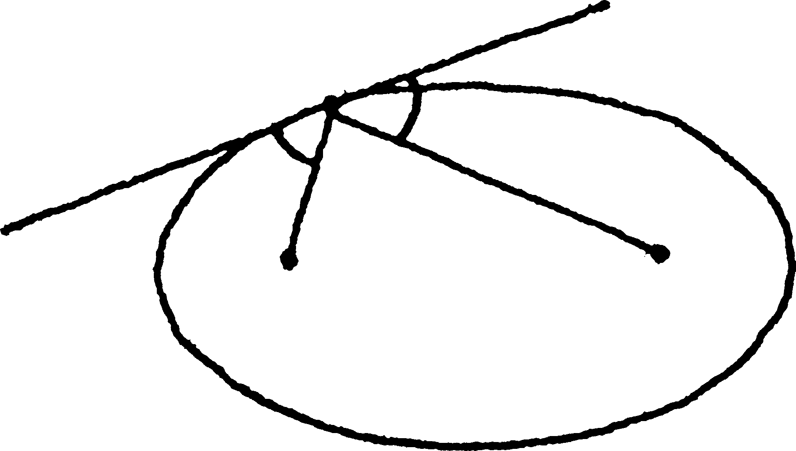
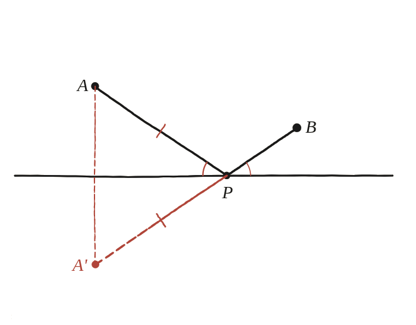

Per què el camí més curt forma angles iguals amb la línia?

Un camí que no pot ser recte
El camí més curt entre dos punts ja se sap que és el segment recte —però aquí el camí ha d'anar de A a B tocant una recta pel mig, i per tant no pot ser un únic segment recte. Tota la dificultat és trobar la manera de convertir-lo, sense canviar-ne la longitud, en un camí que sí ho sigui.
L'operació que desdobla el camí
Es necessita una transformació que conservi totes les distàncies (perquè el camí "més curt" no canviï de sentit) i que permeti posar les dues meitats del camí en línia recta. Aquesta transformació és la reflexió: reflectint el punt A respecte de la recta, s'obté un punt A' tal que, per a qualsevol punt P de la recta, la distància AP és sempre igual a A'P.

El camí trencat es torna recte
Com que AP=A'P per a qualsevol P de la recta, el camí A→P→B fa exactament la mateixa longitud que el camí A'→P→B, sigui quin sigui el punt P triat. I entre tots els camins possibles d'A' a B passant per un punt P de la recta, el més curt és, sense cap dubte, el segment recte A'B —que només toca la recta al punt exacte on aquest segment la creua.
D'aquí surten els angles iguals
Un cop trobat aquest punt P òptim (la intersecció d'A'B amb la recta), els angles que el camí A→P i el camí P→B formen amb la recta resulten ser iguals —perquè A'P i AP formen el mateix angle amb la recta (per la simetria de la reflexió), i A', P i B estan alineats.
El camí més curt que toca una recta pel mig forma sempre angles iguals amb ella, perquè reflectint un dels dos punts respecte de la recta, el camí trencat es converteix en un segment recte entre el reflex i l'altre punt —i un segment recte és, per definició, el camí més curt possible.
Comprovació
A=(0,3), B=(8,1), recta y=0: reflectint A a A'=(0,-3), el punt òptim surt P=(6,0), amb longitud total √80≈8,944. Amb P=(5,0) (no òptim): la longitud surt ≈8,993, més llarga, tal com havia de passar.